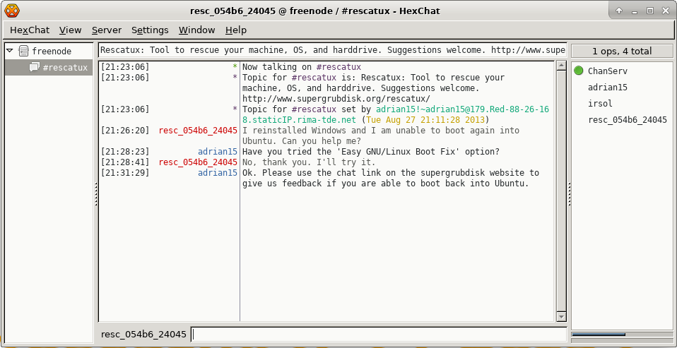

| English |
You might be having a boot problem right now. Many questions arise. What Rescapp option should I use? Maybe I should use another tool? I don't even know how I installed my GNU/Linux distribution six months ago. I need help. This option might help you if you are lucky enough to find something awake and willing to help. Be warned that anyone can impersonate adrian15, the main Rescatux developer and convince you to run commands that might harm your computer. Be safe.
It opens a chat window (originally with the hexchat program) that lets you join the rescatux community on the #rescatux channel on the freenode server: irc.freenode.org.
